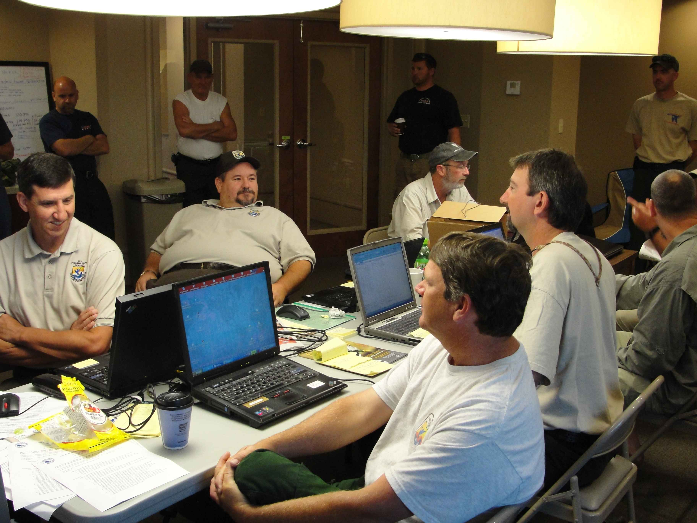
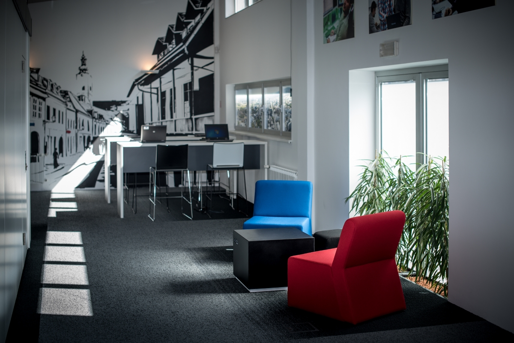

O nama
Portal Glasnik pokrenut je 2018. godine s jednostavnom idejom - na jednom mjestu okupiti pažljivo odabrane priče iz svijeta poslovanja i karijere, ali i one opuštenije, iz kuhinje. Vjerujemo da dobro novinarstvo ne mora biti dosadno, a da koristan savjet ne mora biti suhoparan. Svaki tekst koji objavimo prolazi kroz našu malu, ali posvećenu redakciju.

Naš tim
Redakciju Glasnika čini desetak novinara, urednika i suradnika raspoređenih u dvije rubrike - Posao i karijera te Hrana. Svatko od nas dolazi iz drugačijeg profesionalnog backgrounda, od ekonomije i prava do gastronomije, što našim tekstovima daje širu perspektivu.
Glavna urednica rubrike Posao i karijera prati teme rada na daljinu, digitalizacije i prava zaposlenika već više od deset godina, dok rubriku Hrana vodi tim entuzijasta koji svaki recept prije objave isproba u vlastitoj kuhinji - barem dvaput.
Zajednička nit koja nas spaja je uvjerenje da čitatelji zaslužuju jasne, provjerene i korisne informacije, napisane na način koji se čita u jednom dahu.

Gdje nas možete pronaći
Naša redakcija smještena je u srcu Zagreba, samo nekoliko minuta hoda od Trga bana Jelačića. Iako većinu vremena provodimo na terenu i u razgovorima sa sugovornicima, naš ured uvijek je otvoren za čitatelje koji nam žele osobno predložiti temu ili recept.
Adresa: Bogovićeva ulica 5, 10000 Zagreb
Radno vrijeme: radnim danima od 9 do 16 sati
Na karti ispod možete vidjeti točnu lokaciju naših prostorija.